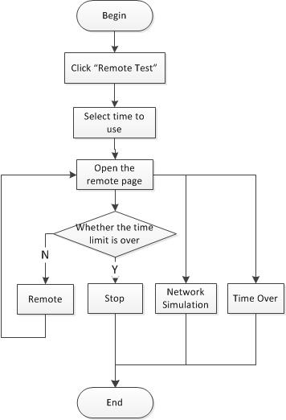

2.5 Remote Test
Users log in the system with the account and identity, and find the "Remote Test" menu. You can click the "New Remote Test " to enter the debugging page. Operate the mobiles provided by the system. The operational flow chart is shown as below.
Remote Test

Flow chart for Remote Test
(1) Click the "Start" and select the time to user, then the operation page is open.
Select the time to use
(2) Users can choose to upload APP, screenshots, shell scripts and operation log on the mobile debug page. As shown as below.

Operation page